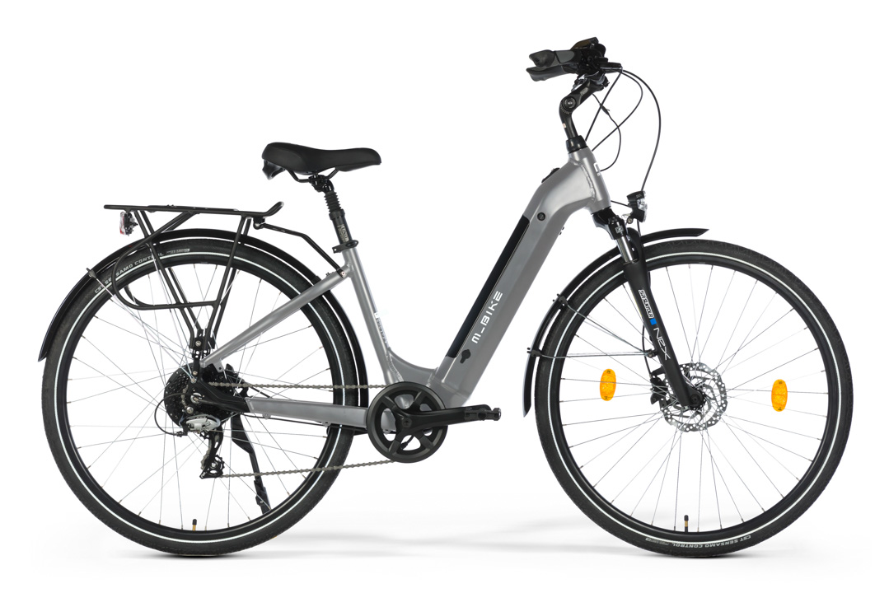
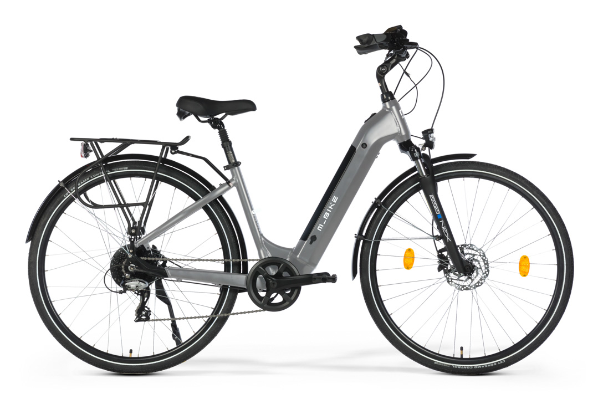

Rowery elektryczne (E-bike)
Wyposażone w silnik wspomagający pedałowanie, ułatwiają pokonywanie wzniesień i długich tras, dostępne jako miejskie, górskie czy trekkingowe.

Dowiedz się jaki rower będzie najlepszy dla ciebie
Wyposażone w silnik wspomagający pedałowanie, ułatwiają pokonywanie wzniesień i długich tras, dostępne jako miejskie, górskie czy trekkingowe.
